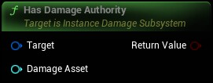

True if current net mode allows for spawning and damaging destrcutibles
|
Target
Instance Damage Subsystem Object Reference
|
|
|
Damage Asset
Soft Object Reference (by ref)
|
|
Return Value
Boolean
|
True if current net mode allows for spawning and damaging destrcutibles |